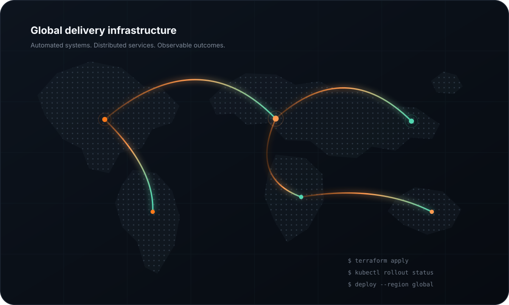

Infrastructure and delivery builds
Terraform, Docker, Kubernetes, cloud networking and CI/CD projects with architecture explanations.
Explore projects ↗I support cloud infrastructure, deployment workflows and automation for public-sector digital services—while documenting the engineering principles behind the work.

Each area now has its own page, with clearer navigation and enough space to explain the work properly.
Terraform, Docker, Kubernetes, cloud networking and CI/CD projects with architecture explanations.
Explore projects ↗A structured view of infrastructure, platforms, automation, Linux and observability capabilities.
View skills ↗Current work at Fimatix and the operational background that supports my engineering approach.
View experience ↗Writing on Terraform, containers, Kubernetes, delivery pipelines and observability.
Read articles ↗How technical delivery, documentation and community work shape the way I operate.
About me ↗Reach out regarding DevOps roles, technical communities or engineering projects.
Get in touch ↗